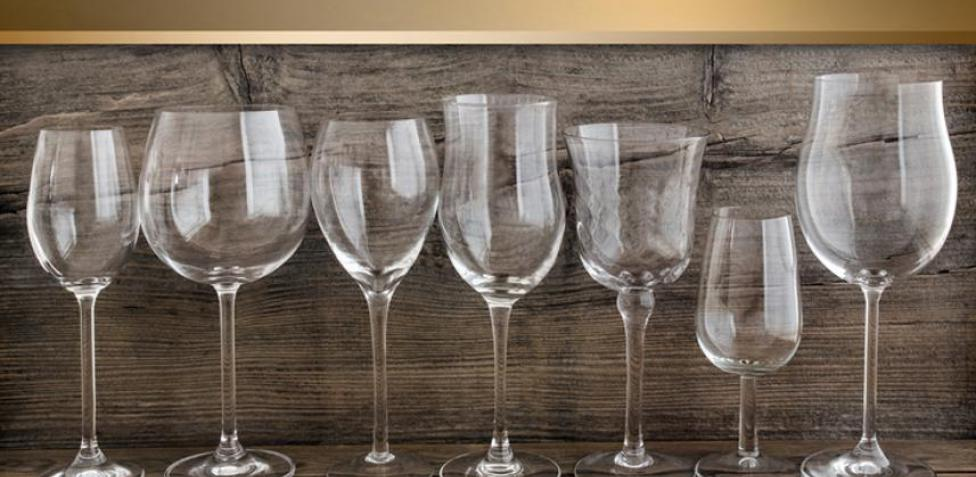

Vinos
➤¿Que tipo de copa se ultiliza para cada vino?
Copas tipo Borgoña y Budeos se utilizan para vinos tintos, las mismas
son copas grandes, con bases de cuerpo redondas que permiten que el
vino gire correctamente en su interior.
Copas de estilo Burdeos se utilizan para vinos blancos, pero con un
tamaño algo menor en el cuerpo y un tallo más prolongado. La boca de
la copa suele ser también más abierta, para potenciar el dulzor en el
caso de los vinos blancos más frescos.
Copas de tipo Flauta se utilizan para vinos espumantes que deben
servirse fríos, por lo que la forma de la copa sirve para evitar la
subida de la temperatura del vino.
Podemos agregar un cuarto modelo de copa que seria la copa de Jerez,
similar al de la copa para vinos espumosos, pero de menor tamaño y de
tallo más corto. También podría servirnos una copa de Oporto, algo más
ancha y con la boca más cerrada. Este tipo de copa podría servirnos
para disfrutar prácticamente cualquier tipo de vinos especiales: vinos
dulces, olorosos, amontillados, Pedro Ximénez, etc. Vinos muy
aromáticos, dulces, de alto contenido alcohólico, que se sirven
normalmente fríos y que ven reforzadas sus características con este
tipo de copas.

Viajes
➤¿Cuales son los mejores destinos?
Auque todo nuestro pais es hermoso de punta a punta te recomendamos 4
lugares que no pueden faltar en tu ruta.
En el noroeste de Argentina te recomendamos Salta y Jujuy, tienen de
todo: Valles frondosos, yacimientos arqueológicos de pobladores
originarios, tradiciones culturales y folclore propio, gastronomía y
sobre todo, la riqueza y las peculiaridades de la Puna, el altiplano
argentino donde la vida continúa su curso a más de 4000m.
En el este te sugerimos que visites Buenos Aires. Si nunca has estado en
Argentina, Buenos Aires es un imprescindible. Argentina y lugares
turísticos unido todo en Buenos Aires. La melancolía de San Telmo, los
tangos, la historia convulsa de su centro, el ambiente moderno de
Palermo, las facturas (que se comen). Buenos Aires es todo lo que puedes
amar y odiar en Argentina. ¡No te la puedes perder!
En el centro del pais te vas a encontrar con Mendoza que sin duda te va
a enamorar con tus kilometros de viñedos. Tambien podes visitar el
Parque Provincial del Aconcagua y acercarte a la cumbre mas alta de
América
Por ultimo en el Sur Argentino sin duda San Martín de Los Andes, Villa
La Angostura y Bariloche son los mejores destinos. Esta zona tiene
muchos parques y muchas opciones por lo que vas a tener que elegir. Si
tienes que sacrificar algo porque vas más justo de tiempo, céntrate en
Bariloche. En mi opinión es uno de los sitios más bonitos que visitar en
Argentina, porque hay muchas cosas que ver y lo pondría siempre en el
itinerario.